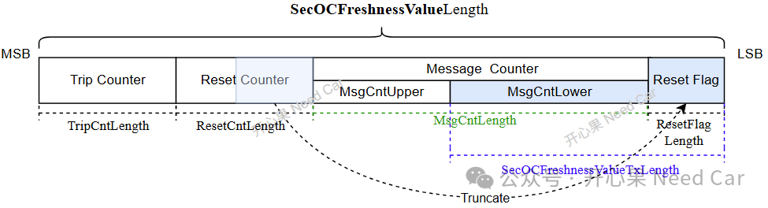
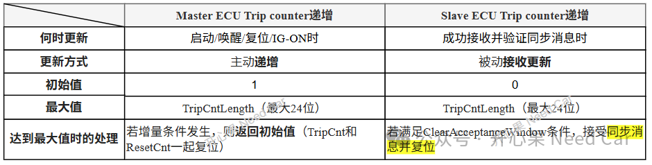

开心果 Need Car · 2026-05-29T06:21:00+08:00 · 微信原文
在现代汽车电子电气架构中，车内通信安全是至关重要的。AUTOSAR标准中的 Secure Onboard Communication (SecOC) 模块为关键数据提供了认证和防重放攻击的保护。其核心在于新鲜度值（Freshness Value, FV） 的管理。FV是一个随时间动态变化的数值，与消息认证码（MAC）协同工作，确保每条收到消息的唯一性和时效性。本文将详细剖析FV的构成、其管理机制以及在边界情况下的鲁棒性设计。
一、新鲜度值（FV）的构成：三层计数器与复位标志
根据AUTOSAR规范，FV由一个固定长度的数据结构构成，最大不超过64位，由以下四部分组成：
Trip Counter (跳数计数器, TripCnt): 这是一个在ECU“生命周期”事件中递增的计数器。对于FV管理主节点（Master ECU），它在启动、唤醒、复位或IG-ON时递增1。其初始值为1，最大长度可达24位。计数器达到最大值后会回绕至初始值。
Reset Counter (复位计数器, ResetCnt): 这是一个周期递增的计数器，由主节点基于固定的 ResetCycle 定时递增（比如：20s）。其初始值为0，最大长度同样可达24位。当TripCnt递增或初始化时，ResetCnt也会随之复位。
Message Counter (消息计数器, MsgCnt): 这是一个逐消息递增的计数器，用于区分同一次TripCnt和ResetCnt生命周期内发送的每一条PDU。当ResetCnt递增或初始化时，MsgCnt会被重置。
Reset Flag (复位标志): 这是复位计数器最低端若干位（由 ResetFlagLength 定义，最大2位）的截取值。它被用作消息计数器的高位，以保证在接收端能准确判断是否有计数器翻转发生。

二、同步消息机制：主/从节点的协作
为了各ECU之间的FV同步，SecOC引入了主从（Master-Slave）架构。
FV管理主节点 (Master ECU): 负责管理TripCnt和ResetCnt的主要“时钟”。它会周期性地（每个ResetCycle周期） 或启动时立即发送一个同步消息（TripResetSyncMsg） 给所有从节点（Slave ECU）。该消息包含了完整的TripCnt和ResetCnt值。
FV管理从节点 (Slave ECU): 在启动时从非易失性存储器（NVM）加载TripCnt的最新值。随后，通过接收并验证主节点发来的同步消息，被动地更新其维护的TripCnt和ResetCnt最新值。从节点在初始化时，TripCnt初始值为0，ResetCnt初始值为0。
主/从节点TripCounter的递增机制，如下所示：

三、核心鲁棒机制：ClearAcceptanceWindow
在理想情况下，主/从节点间的计数器是完全同步的。但实际中，由于通信延时、丢包或干扰，主/从节点的计数器可能在边界值附近出现微小偏移。此时，ClearAcceptanceWindow 参数发挥着至关重要的作用。
问题场景：当主节点的TripCnt达到最大值（例如，24位计数器的最大值）并即将回绕到初始值时，从节点的TripCnt可能仍停留在最大值附近，导致永久性的失同步。
解决方案：规范定义了在从节点处理TripCnt达到最大值时的同步消息接收条件。
条件1:"跳数计数器最大值" – ClearAcceptanceWindow ≤ "从ECU维护的最新跳数计数器值" ≤ "跳数计数器最大值"
条件2:"跳数计数器的初始值" ≤ "同步消息中的跳数计数器值" ≤ "初始值 + ClearAcceptanceWindow"
当上述两个条件同时满足时，从节点才会接受并信任该同步消息，随后将其TripCnt和ResetCnt复位到初始值。
设计意图：这个窗口机制本质上是提供了一个容错区间。它允许主节点（计数器已回绕）和从节点（计数器仍在高位）之间存在一个微小的窗口。通过这个窗口，从节点可以“理解”主节点已进入新的生命周期，从而安全地复位自己的计数器，恢复同步。这极大地增强了系统在计数器边界情况下的鲁棒性，防止因微小偏差导致整个通信中断。
结论
AUTOSAR SecOC的新鲜度值管理是一个精心设计的系统，它通过多层计数器结构实现了对消息生命周期的精细化管理。主从同步机制确保了系统状态的一致性，而 ClearAcceptanceWindow 这样的特性设计，则从工程角度解决了边界条件的同步问题，是保障车内安全通信可靠性的关键一环。理解这些机制，对于开发和维护符合AUTOSAR标准的安全通信系统至关重要。
往期精彩回顾